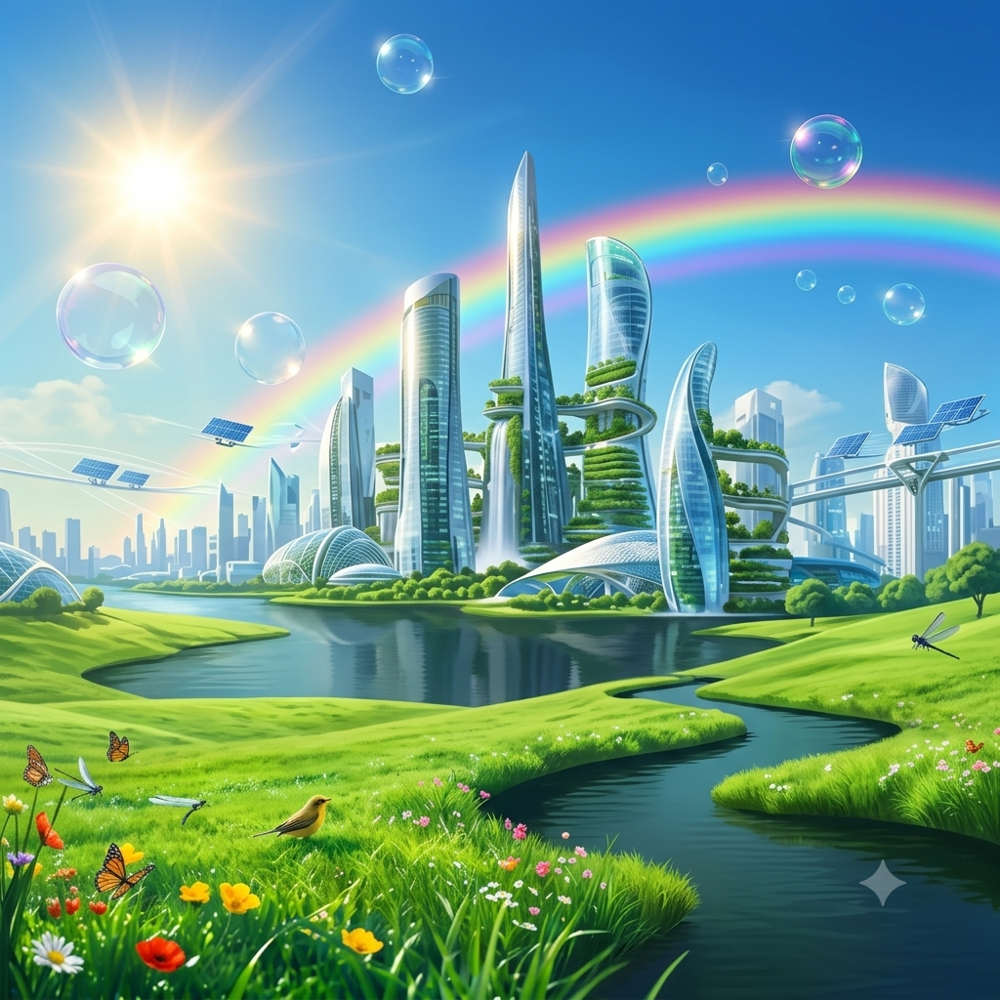

por: emilly
Você sabe o que é água virtual?
Independentemente da sua resposta, uma coisa você pode ter certeza: sem ao menos nos darmos conta, consumimos milhares de litros dela diariamente. O termo foi cunhado algumas décadas atrás, inspirado, sobretudo, pelas formas de produção, consumo, e a maneira que utilizamos os recursos naturais. A água virtual atrela ao consumo de água aspectos de cunho social, político e econômico. Uma forma de melhor compreender e comercializar esse importante recurso natural.
Água virtual: entendendo o conceito
Além da água que consumimos diretamente todos os dias para beber, cozinhar os nossos alimentos e fazer a higiene pessoal, gastamos outros milhares de litros desse líquido tão precioso indiretamente. Afinal, tudo o que utilizamos no dia a dia como roupas, alimentos e eletrodomésticos precisou de água para ser produzido. Para identificar a quantidade real de água utilizada, foi criado o conceito de “pegada hídrica” – semelhante à “pegada de carbono” –, que mede o consumo da chamada “água virtual”.